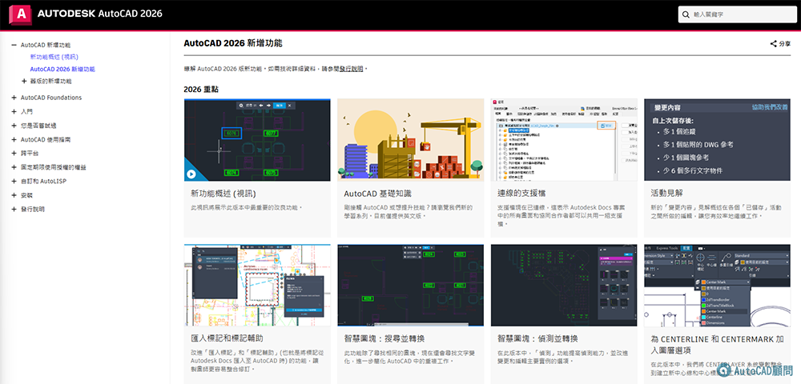
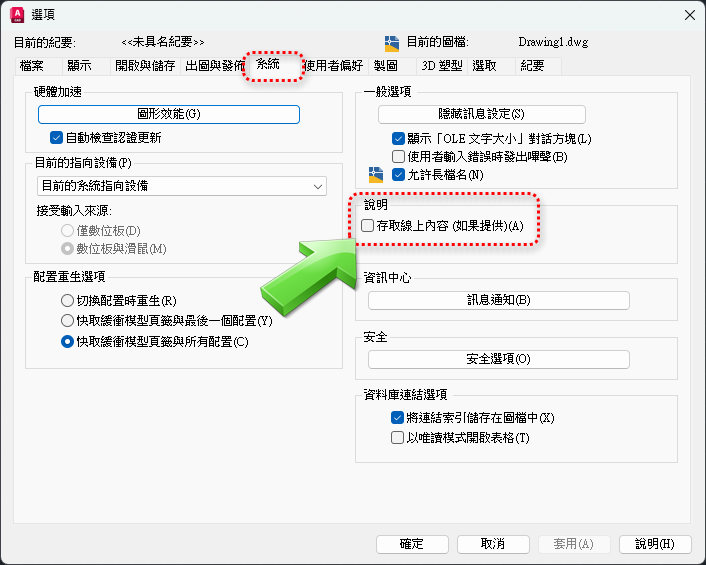
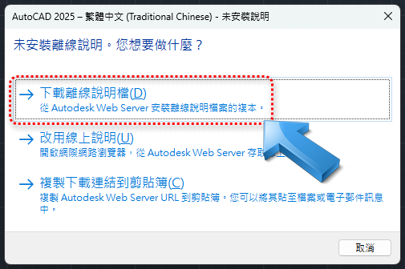

說明：在AutoCAD中預設開啟「F1說明」會使用線上版本，你必須連線網際網路。

AutoCAD 2026 線上說明（繁體中文）
http://help.autodesk.com/view/ACD/2026/CHT/
AutoCAD 2026 線上說明（英文）
http://help.autodesk.com/view/ACD/2026/ENU/
AutoCAD 2026 線上說明（簡體中文）
http://help.autodesk.com/view/ACD/2026/CHS/
AutoCAD 2026 for Mac 線上說明（英文）
https://help.autodesk.com/view/ACDMAC/2026/ENU/
AutoCAD 2026 for Mac 線上說明（簡體中文）
https://help.autodesk.com/view/ACDMAC/2026/CHS/
AutoCAD 2026 LT版 線上說明（繁體中文）
http://help.autodesk.com/view/ACDLT/2026/CHT/
AutoCAD 2026 LT版 線上說明（英文）
http://help.autodesk.com/view/ACDLT/2026/ENU/
AutoCAD 2026 LT版 線上說明（簡體中文）
http://help.autodesk.com/view/ACDLT/2026/CHS/
說明：如果用戶沒有網際網路，可以下載離線說明版。

👇下載並安裝AutoCAD 2026產品離線F1說明